Ensamble
En esta página aprenderá como integrar todos los componentes que integran una computadora.
Nota: es indispensable tener los desarmadores necesarios de cabeza plana y cruz, así como una pulsera antiestática, para evitar algún daño a nuestros componentes.
Antes de comenzar, primero vamos a tocar los puntos más importantes para poder ensamblar una computadora, después daré una explicación más detallada con imágenes.
1.- Quitar la tapa del case (CPU)
2.- Instalar en el case (CPU) la fuente de energía
3.- Instalar la mainboard en el interior del case (CPU)
4.- Instalar las unidades internas (memoria RAM, disco duro, Lectora, etc.)
5.- Conectar todos los cables internas en los lugares correspondientes
6.- Colocar y empernar la tapa del case (CPU)
7.- Conectar las unidades externas (teclado, mouse, monitor, etc.)
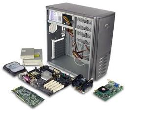
Bueno lo primero que vamos a realizar es retirar la tapa del case, para eso necesitamos un desarmador estrella.
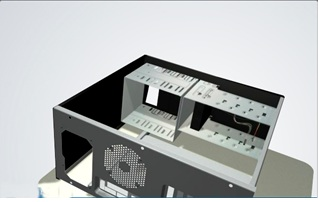
Ahora vamos a instalar la fuente de energía, para eso debemos colocarla en su lugar y empernarlo bien para que nos quede de esta manera.
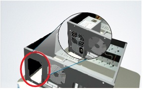
Ahora pasamos a colocar el CPU en el socket, para eso debemos identificar en que posición encaja para después asegurarlo con su seguro.
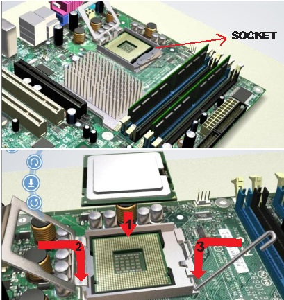
El CPU debe de quedar de esta manera.
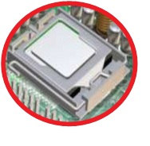
Una vez que terminamos de colocar el CPU pasamos a agregar un poco de pasta térmica encima, la pasta térmica nos sirve para que el CPU no se caliente demasiado, después encima colocamos el COOLER para ayudar a mantener en temperatura adecuada nuestro procesador.
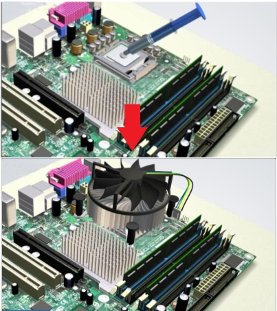
No hay que olvidar que el cooler necesita asegurarse mediante sus 4 extremos y conectar cable en el CPU FAN.
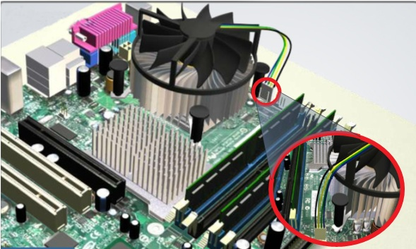
Ahora vamos a colocar la memoria RAM, no olviden que tienen que saber que tipo de ranura tiene su memoria y la cantidad de BUS necesaria, sino su computadora no va a trabajar. Entonces según la ranura ubicamos la memoria en el puerto de expansión, la insertamos, por ultimo debemos asegurarla con los ganchos que tiene a los extremos.
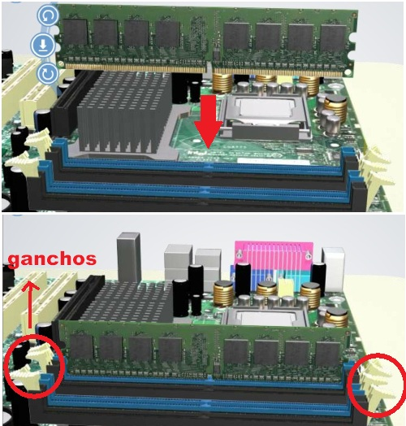
Ahora pasamos a instalar la Mainboard en el case, los conectores de entrada deben ir en una posición en la cual se puedan conectar los periféricos de entrada desde la parte externa del case.
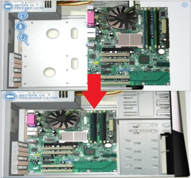
Una vez que tenemos instalada la mainboard, en el caso que quisiéramos vamos a colocar tarjetas de expansión (video, Red, WLAN).Primero comenzamos con la tarjeta de video, en este caso va en el puerto AGP.
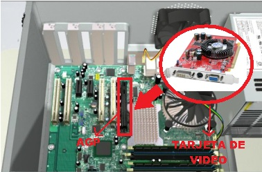
Ahora vamos a colocar la tarjeta de red, en algunas casos dependiendo del tipo de tarjeta puedo ir en el puerto PCI, en el puerto AMR .
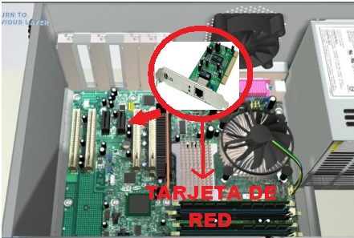
Una vez que colocamos la tarjeta de red, pasamos a colocar la tarjera WLAN (red inalámbrica). La antena se coloca después.
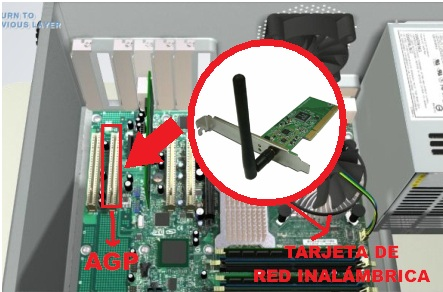
Ahora que hemos terminado de instalar las tarjetas, vamos a instalar nuestras unidades internas (Disco Duro, Disquetera, etc.).Primero colocamos el disco duro de tal manera que encaje en el compartimiento de unidades 3.5, lo alineamos con los orificios del chasis para así poder empernarlo.
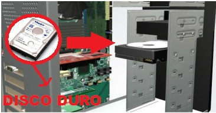
Una vez que colocamos el disco duro, pasamos a colocar la lectora de DVD por la parte externa del case, en el compartimiento de unidades frontal.
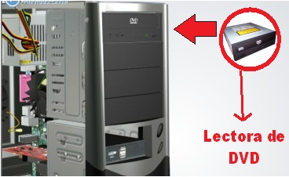
De la misma manera colocamos las disquetera, solo que esta va a ir en el compartimiento inferior.
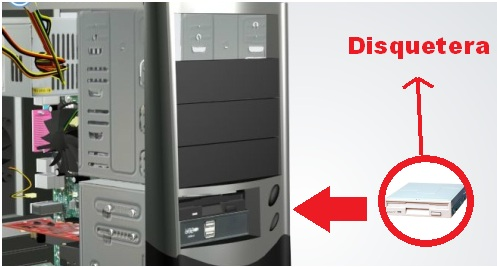
Ahora pasamos a conectar todos los cables de la fuente a la mainboard. Primero colocamos el Cable p1 en el ATX.
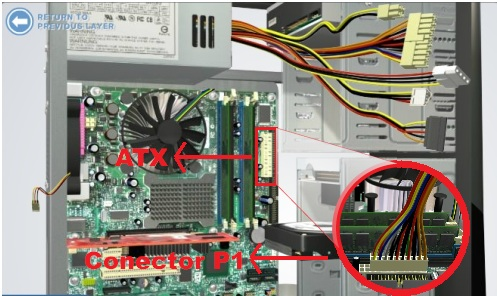
Después colocamos el cable de 12V en el conector ATX 12V.
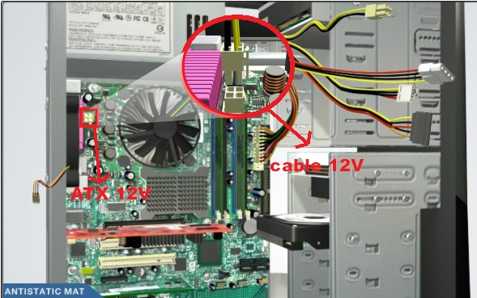
Ahora vamos a colocar los cables de energía en las distintas unidades, primero comenzamos con la lectora de DVD, colocamos en cable Molex en la parte correcta de la Lectora.
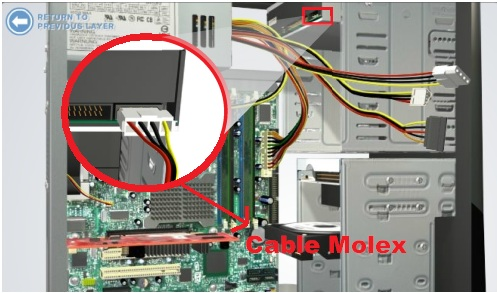
Pasamos a colocar el cable Berg en la disquetera.
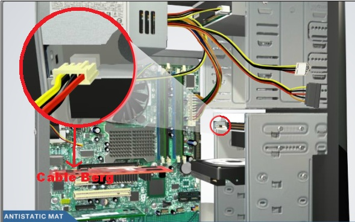
En nuestro caso nuestro disco duro tiene una entrada SATA, entonces nosotros colocamos el cable SATA a nuestro disco duro, en el caso de que no sea SATA, se le coloca otro cable Molex.
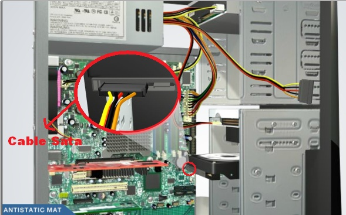
Ahora pasamos a colocar los cables de data (Cable PATA, SATA, FLOPPY).Primero comenzamos con el cable PATA, lo colocamos correctamente en el puerto IDE.
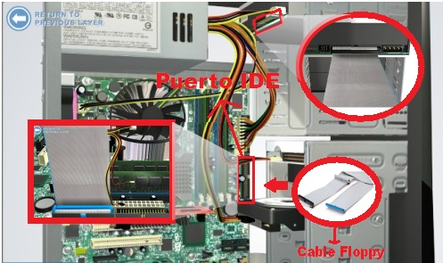
De la misma manera vamos a colocar el cable Floppy en el puerto floppy, teniendo en cuenta que el Pin 1 es que manda, después el otro extremo lo colocamos en la disquetera.
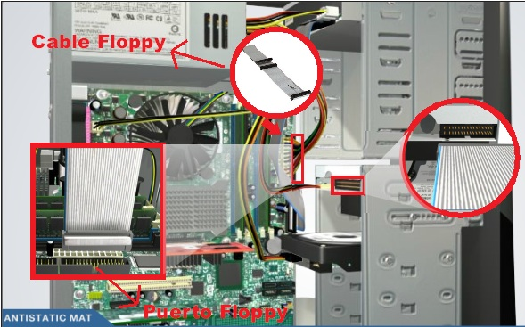
Por ultimo colocamos nuestro cable SATA en el puerto SATA de las mainboard, nos aseguramos que este bien conectado, después conectamos el otro extremo en el disco duro.
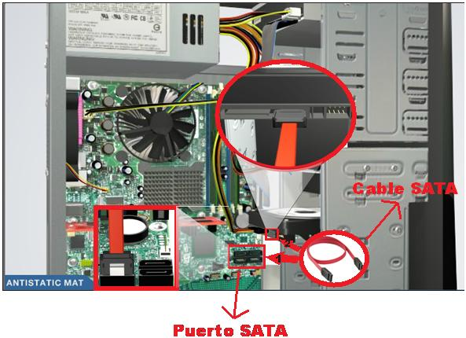
Una vez que terminamos de conectar todo correctamente, pasamos a cerrar el case con las tapas que habíamos retirado anteriormente, no olvidar que se tiene que empernar para que este mas fijo.
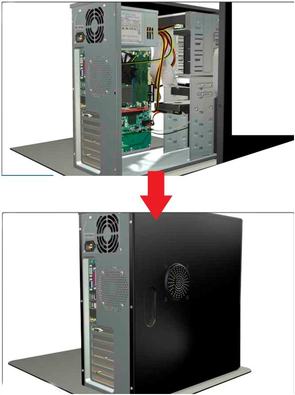
Ahora empezamos a colocar algunos periféricos de entrada (mouse y teclado en este caso).No olvidar que deben colocar los cables según la ranura que indican.
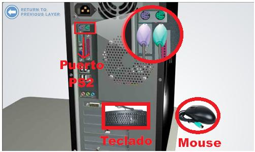
Ahora colocamos nuestro cable de video, en mi caso es un cable DVI, normalmente la mayoría de computadoras utiliza el puerto VGA.
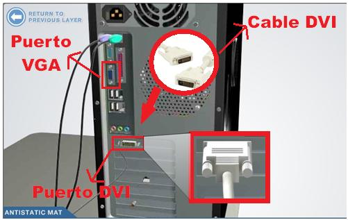
Si tuviéramos algún dispositivo con tipo de entrada USB, entonces procedemos a conector en cualquiera de los puertos USB.
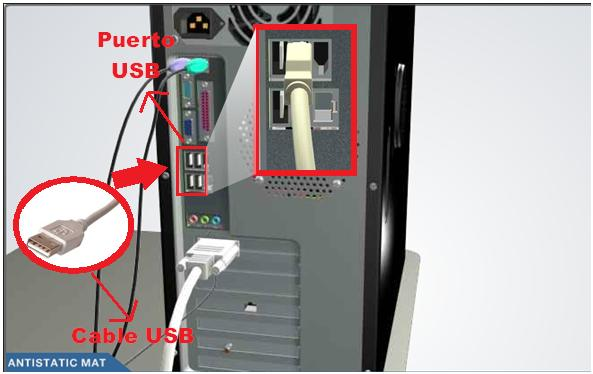
Ahora pasamos a colocar nuestro cable Ethernet, el que nos permite conectarnos a una Red
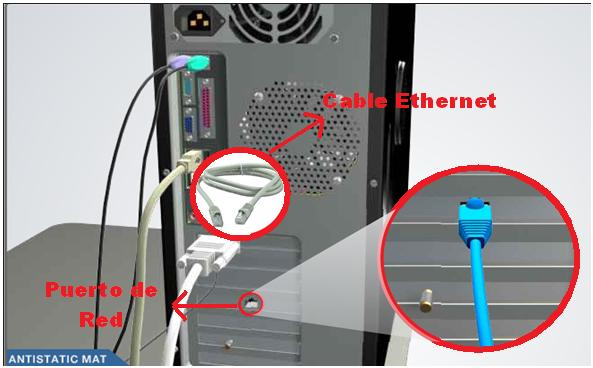
Ahora colocamos la Antena Inalámbrica en el puerto inalámbrico.
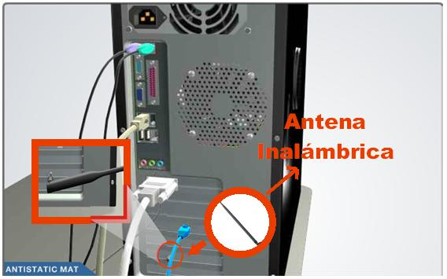
Para terminar colocamos nuestra cable de energía en la parte posterior de la Fuente de poder.
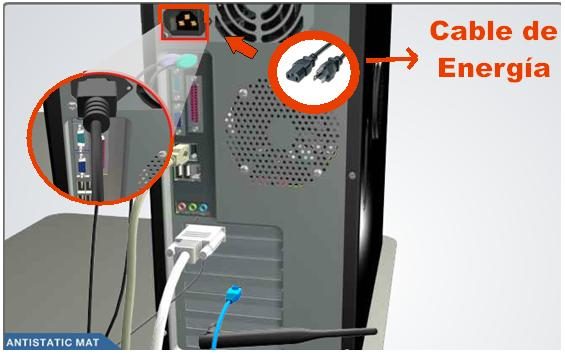
Como paso final prendemos nuestra maquina y debe estar operativa.
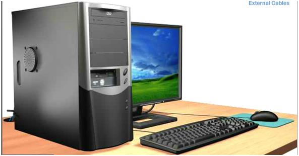